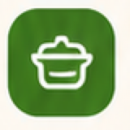
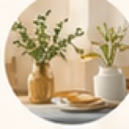
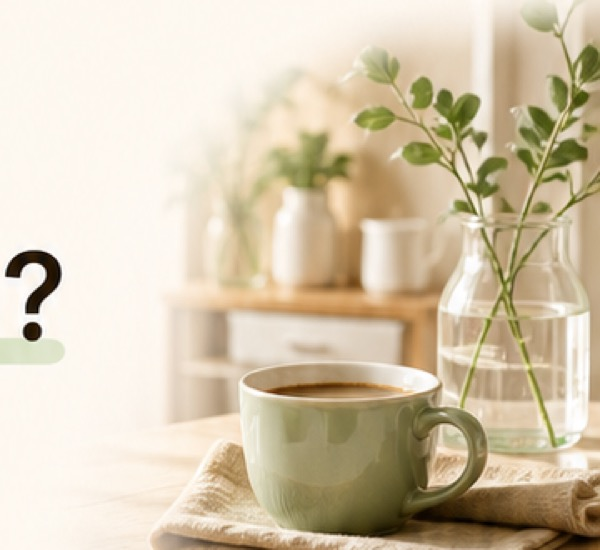
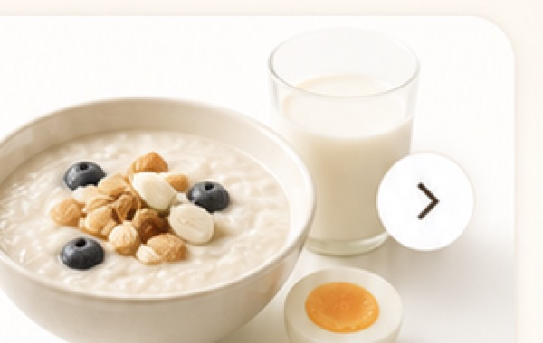
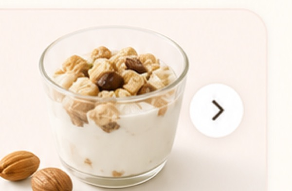
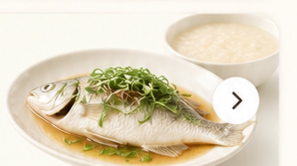

家
家庭、偏好和账号


我家饭桌
3 位成员 · 12 道常做菜 · 今日午餐未完成
把家里的吃饭习惯收好
这里放成员、偏好、邀请和账号设置。平时不用常来，但需要时能马上找到。
家庭工具
常用但不抢首页位置
家庭成员
谁在一起维护饭单

妈妈 成员 · 常看清淡菜 成员
弟弟 成员 · 爱吃宵夜 成员邀请家人一起用
发一个链接，对方加入后就能一起维护常做菜和买菜清单。
7 天有效
可随时撤销
